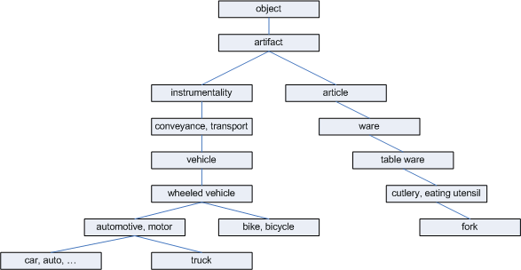

Introduction
In the previous article, we presented an approach for capturing
similarity between words that was concerned with the syntactic similarity of two
strings. Today we are back to discuss another approach that is more concerned
with the
meaning of words. Semantic similarity is a confidence score that reflects
the semantic relation between the meanings of two sentence. It is difficult to
gain a high accuracy score because exact semantic meanings are only
completely understood in a particular context.
The goals of this paper are to:
-
Present to you some dictionary-based algorithms to capture semantic
similarity between two sentences, which is heavily based on the WordNet semantic
dictionary.
-
Encourage you to work with the interesting topic of NLP.
Groundwork
Fortunately, there are a lot of previous scientific articles on
semantic similarity and semantic relatedness measurement developed in the
context of information integration, information retrieval, etc.
WordNet
WordNet is a lexical database which is available online and provides a large
repository of English lexical items. There is a multilingual WordNet for
European languages which are structured in the same way as the American WordNet.
WordNet was designed to establish connections between four types of Parts of Speech
(POS) - noun, verb, adjective, and adverb. The smallest unit in
WordNet is synset, which represents a specific meaning of a word. It includes
the word, its explanation, and its synonyms. The specific meaning
of one word under one type of POS is called a sense. Each sense of a word is in
a different synset. Synsets are equivalent to senses = structures containing
sets of terms with synonymous meanings. Each synset has a gloss that defines the
concept it represents. For example the words night, nighttime and dark
constitute a single synset that has the following gloss: the time after sunset
and before sunrise while it is dark outside. Synsets are connected to one
another through explicit semantic relations. Some of these relations (hypernym,
hyponym for nouns and hypernym and troponym for verbs) constitute is-a-kind-of (holonymy)
and is-a-part-of (meronymy for nouns) hierarchies.
For example, tree is a kind
of plant, tree is a hyponym of plant and plant is hypernym of tree. Analogously,
trunk is a part of tree and we have that trunk is a meronym of tree and tree is
holonym of trunk. For one word and one type of POS, if there are more than one
sense, WordNet organizes them in the order of the most frequently used to the
least frequently used (Semcor).
WordNet .NET
Malcolm Crowe and Troy Simpson have developed an open-source WordNet.Net....
Semantic similarity between sentences
Given two sentences, the measurement is to determine how similar the meaning
of two sentences are. The higher the score the
more similar the meaning of the two sentences.
Steps for computing semantic similarity between two sentences:
- First each sentence is partitioned into a list of tokens.
- Part-of-speech disambiguation or tagging.
- Stemming words.
- Find the most appropriate sense for every word in a
sentence (Word Sense Disambiguation).
- Finally, compute the similarity of the sentences based on the similarity
of the pairs of words.
Tokenization
Each sentence is partitioned into list of words and we remove the stop
words. Stop words are frequently occurring, insignificant words
that appear in a database record, article or web page , etc.
Tagging part of speech (*)
This task is to identify the correct part of speech (POS - like noun, verb,
pronoun, adverb ...) of each word in the sentence. The algorithm
takes a sentence as input and a specified tag set (a finite list of POS tags). The
output is a single best POS tag for each word. There are two types of taggers:
the first one attaches syntactic roles to each word (subject, object, ..) and
the second
one attaches only functional roles (noun, verb, ...). There is a lot of work
that has
been done on POS tagging. The tagger can be classified as rule-based or stochastic.
Rule-based taggers use hand written rules to disambiguate tag ambiguity. An example of rule-based
tagging is
Brill's tagger (Eric Brill algorithm) . Stochastic taggers resolve tagging
ambiguities by using a training corpus to compute the probability of a given
word having a given tag in a given context. For example: tagger using the Hidden
Markov Model, Maximize likelihood.
Stemming word (*)
We use the Porter stemming algorithm. Porter stemming is a process of
removing the common morphological and inflexional endings of words. It can be
thought of as a lexicon finite state transducer with the following steps:
Surface form -> split word into possible morphemes -> getting intermediate
form -> map stems to categories and affixes to meaning -> underlying form.
i.e : foxes -> fox + s -> fox.
(*) This work is not available in this release.
Semantic relatedness and Word sense disambiguation (WSD)
As you are already aware, a word can have more than one sense that
can lead to ambiguity.
For example : the word “interest" has different meaning in the two following
contexts:
•“Interest” from a bank.
•“Interest” in a subject.
WSD with original Micheal Lesk Algorithm
Disambiguation is the process of finding out the most appropriate
sense of a word that is used in a given sentence. The Lesk algorithm uses dictionary definitions
(gloss) to disambiguate a polysemous word in a
sentence context. The major objective of his idea is to count the number of words that are
shared between two
glosses. The more overlapping words, the more
related the senses are.
To disambiguate a word, the gloss of each of its senses is
compared to the glosses of every other word in a phrase. A word is assigned
to the sense whose gloss shares the largest number of words in common with the
glosses of the other words.
For example: In performing disambiguation
for the "pine cone" phrasal, according to the Oxford Advanced
Learner’s Dictionary, the word "pine" has two senses:
the word "cone" has 3 senses:
-
sense 1: solid body which narrows to a
point
-
sense 2: something of this shape
whether solid or hollow
-
sense 3: fruit of certain
evergreen tree
=> By comparing each of the two gloss senses of the
word "pine" with each of the three senses of the word "cone", it is found that
the words "evergreen tree" occurs in one
sense in each of the two words. So these two senses are then declared to be the
most appropriate senses when the words "pine" and "cone" are used together.
The original Lesk algorithm begins anew for each word and does not
utilize the senses it previously assigned. This greedy method does not always
work effectively. Therefore if the computational time is not critical we should
think of optimal sense combination by applying local search techniques such
as Tabu or Beam. The major idea behind such methods is to reduce the
search space by applying several heuristic techniques. The Beam searcher limits its
attention to only k most promising candidates at each stage of the search
process, where k is a predefined number. Tabu is a method in which a fundamental
role is played by keeping track of features of previously visited solutions,
which makes use of memory in a more efficient manner. It keeps a list of moves that
are forbidden to be performed in order to prevent cycling.
The adapted Micheal Lesk Algorithm
The original Lesk used the gloss of a word and
is restricted on the overlap scoring mechanism. In this section, we introduce
an adapted version of the algorithm with some improvements to overcome the limitations:
- Access a dictionary with senses arranged in a
hierarchical order (WordNet). This extended version uses not only the
gloss/definition of the synset but also considers the meaning of related
words.
- Apply a new scoring mechanism to measure gloss overlap
that gives a more accurate score than the original Lesk bag of words counter.
To disambiguate each word in a sentence that has N words, we
call each word to be disambiguated as a target word. The algorithm is described by
the following
steps:
1. Select a context: optimises computational time
so if N is long, we will define K
context around the target word (or k-nearest neighbor) as the sequence of words starting K words to the
left of the target word and ending K words to the right. This will reduce the
computational space that decreases the processing time. For example: If K is four, there
will be two words to the left of the target word and two words to the right.
2. For each word in the selected context, we look up and list
all the possible senses of both POS (part of speech) noun and verb.
3. For each sense of a word (WordSense), we list the following relations
(example with pine and cone):
4. Combine all possible gloss pairs that are archived at previous steps and
compute the relatedness by searching for overlap. The overall score is the sum
of the scores for each relation pair.
When computing the relatedness between two synsets s1 and s2, the pair
hype-hype means the gloss for the hypernym of s1 is compared to gloss for the
hypernym of s2. The pair hype-hypo means that means the gloss for the hypernym
of s1 is compared to gloss for the hyponym of s2.
-> OverallScore(s1, s2)= Score(hype(s1)-hypo(s2)) + Score(gloss(s1)-hypo(s2)) +
Score(hype(s1)-gloss(s2))...
( OverallScore(s1, s2) is also equivalent to OverallScore(s2, s1) ).
In the example of "pine cone", there are 3 senses of pine and 6 senses of cone,
so we can
have a total of 18 possible combinations. One of them is the right one.
To score the overlap we use a new scoring mechanism (1) that differentiates
between N-single words and N-consecutive word overlaps and effectively treats
each gloss as a bag of words. It is based on ZipF's Law, which
says that the length of words is inversely proportional to their usage. The
shortest words are those which are used more, the longest ones are used less.
Measuring overlaps between two strings is reduced to solve the problem of finding
the
longest common sub-string with maximal consecutives.
Each overlap which contains N consecutive words,
contributes N^2 to the score of gloss sense combination.
For example:
an
overlap "ABC" has score 3^2=9 and two single overlaps "AB" and "C" has score
2^2 + 1^1=5.
5. Once each combination has been scored, we pick up the sense that has the highest
score to be the most appropriate sense for the target word in the selected context space. Hopefully the output not only gives us the most appropriate sense but also the
associated part of speech for a word.
If you intend to work with this topic, you should refer to
the measurements of Hirst-St.Onge which based on finding
the lexical chains between synsets.
Semantic similarity between two synsets
The above method allows us to find the most appropriate sense for each word
in a sentence. To compute the similarity between two sentences, we base the
semantic similarity between word senses. We capture semantic similarity between two word
senses based on the path length similarity.
In WordNet, each part of speech words (nouns/verbs...) are organized into
taxonomies where each node is a set of synonyms (synset) represented in one sense. If
a word has more than one sense, it will appear in multiple synsets at various
locations in the taxonomy. WordNet defines relations between synsets and
relations between word senses. A relation between synsets is a semantic relation,
and a relation between word senses is a lexical relation. The difference is that
lexical relations are relations between members of two different synsets, but
semantic relations are relations between two whole synsets.
For instance:
- Semantic
relations are hypernym, hyponym, holonym , etc.
- Lexical relations are antonym relation and the derived form relation.
Using the example, the antonym of the tenth sense of the noun light (light#n#10) in WordNet
is the first sense of the noun dark (dark#n#1). The synset to which it belongs is
{light#n#10, lighting#n#1}. Clearly it makes sense that light#n#10 is an antonym
of dark#n#1, but lighting#n#1 is not an antonym of dark#n#1; therefore the
antonym relation needs to be a lexical relation, not a semantic relation.
Semantic similarity is a special case of semantic relatedness where we only
consider the IS-A relationship.
The Path Length based similarity
To measure the semantic similarity between two synsets we use
hyponym/hypernym (or is-a relations). Due to the limitation to is-a hierarchies,
we only work with "noun-noun", and "verb-verb" parts of speech.
A simple way to measure the semantic similarity between two synsets is to
treat the taxonomy as an undirected graph and measure the distance between them
in WordNet. Said P. Resnik : "The shorter the path from one node to another, the
more similar they are". Note that path length is measured in nodes/verteces
rather than links/edges. The length of the path between two members of the same synsets is 1 (synonym relations).
This figure shows an example of the hyponym taxonomy in WordNet used for path length
similarity measurement:

In the above figure, we observe that the length between car and auto is 1,
car and truck is 3, car and bicycle is 4, car and fork is 12.
A shared parent of two synsets is known as a sub-sumer. The least common
sub-sumer (LCS) of two synsets is the sumer that does not have any children that
are also the sub-sumer of the two synsets. In other words, the LCS of two
synsets is the most specific sub-sumer of the two synsets. Back to above example,
the LCS of {car, auto..} and {truck..} is {automotive, motor vehicle}, since the
{automotive, motor vehicle} is more specific than the common sub-sumer {wheeled
vehicle}.
The path length gives us a simple way to compute
relatedness distance between two word senses. There are some issues that need to be addressed:
- It is possible for two synsets from the same part of speech to have no common
sub-sumer. Since we did not join all the different top nodes of each part of speech taxonomy, a path cannot always be found between two synsets. But if a unique
root node is being used, then a path will always exist between any two
noun/verb synsets.
- Note that multiple inheritance is allowed in WordNet; some synsets
belong to more than one taxonomy. So if there is more than one path between two
synsets, the shortest such path is selected.
- Lemmatization : when looking up a word in WN, the word is first lemmatized.
Therefore,
the distance between "book" and "books" is 0 since they are identical. But
"Mice" and "mouse" ?
- This measurement only compares the word senses which have the same part of
speech (POS). This means that we do not compare a noun and a verb because they
are located in different taxonomies. We just consider the words that are nouns,
verbs, or adjectives respectively. With the omission of the POS tagger, we will use Jeff Martin's
Lexicon class. When
considering a word, we first check if it is a noun and if so we will treat it as
a noun and its verb or adjective will be disregarded. If it is not a noun, we will
check if it is a verb...
- Compound nouns like "travel agent" will be treated as two single words
via the tokenization.
Measuring similarity (MS1):
There are many proposals for measuring semantic similarity between two synsets:
Wu & Palmer, Leacock & Chodorow, P.Resnik. In this work, we experimented
with two simple measurements:
Sim(s, t) = 1/distance(s, t).
- Where distance is the path length from
s to t using node counting.
Measuring similarity (MS2):
This formula was used in the previous article, which not only took into
account the length of the path but also the the order of the sense
involved in this path.
Sim(s, t) = SenseWeight(s)*SenseWeight(t)/PathLength
- Where
s and t: denote the source and target
words being compared.
SenseWeight: denotes a weight calculated according to the
order of this sense and the count of total senses. PathLength: denotes the length of the connection path from
s to t.
Semantic similarity between two sentences
We will now describe the overall strategy to capture semantic similarity between
two sentences.
Given two
sentences X and Y, we denote m to be length of X, n to be length of Y.
The major steps can be described as follows:
- Tokenization.
- Perform word stemming.
- Perform part of speech tagging.
- Word sense disambiguation.
- Building a semantic similarity relative matrix R[m, n] of each pair of
word senses, where R[i,
j] is semantic simiarity between the most appropriate sense of word at position
i of X and the most appropriate sense of word at position j of Y. Thus,
R[i,j] is also weight of edge connect from i to j. If a word does
not exist in the dictionary we use the edit-distance similarity instead and
output a lower associated weight; for example : an abbreviation like CTO (Chief of Technology Officer).
- We formulate the problem of capturing semantic similarity
between sentences as the problem of computing a maximum total matching weight of
a bipartite graph, where X and Y are two sets of
disjoint nodes. We use the Hungarian method to solve this problem; please
refer to our previous article [3].
If computational time is critical, we can use a simple quick heuristic method as
follows:
Pseudo- codeScoreSum <- 0;
foreach (X[i] in X){
bestCandidate <- -1;
bestScore <- -maxInt;
foreach (Y[j] in Y){
if (Y[j] is still free && r[i, j] > bestScore){
bestScore <- R[i, j];
bestCandidate <- j;
}
}
if (bestCandidate != -1){
mark the bestCandidate as matched item.
scoreSum <- scoreSum + bestScore;
}
}
- The match results from the previous step are
combined into a single similarity value for two sentences. There are many strategies to acquire an
overall combined similarity value for sets of
matching pairs. In the previous section, we presented two simple formulas
to compute semantic
similarity between two word-senses. For each formula we apply an appropriate
strategy to compute the overall score:
- Matching average:
 Where match(X, Y)
are the matching word tokens between X and Y. This similarity is computed by dividing the sum
of similarity values of all match candidates of both sentence X and Y by the
total number of set tokens. An important point is that it is based on each
of the individual similarity values, so that the overall similarity always reflects the
influence of them. We apply this strategy using the MS1 formula.
Where match(X, Y)
are the matching word tokens between X and Y. This similarity is computed by dividing the sum
of similarity values of all match candidates of both sentence X and Y by the
total number of set tokens. An important point is that it is based on each
of the individual similarity values, so that the overall similarity always reflects the
influence of them. We apply this strategy using the MS1 formula.
- Dice coefficient
 This
strategy returns the ratio of the number of tokens that can be matched over the
total of tokens. We apply this strategy using the MS2 formula. Hence, Dice will always return a higher value than Matching average and
it is thus more optimistic. In this strategy we need to predefine a threshold to
select the matching pairs that have values exceeding the given threshold.
This
strategy returns the ratio of the number of tokens that can be matched over the
total of tokens. We apply this strategy using the MS2 formula. Hence, Dice will always return a higher value than Matching average and
it is thus more optimistic. In this strategy we need to predefine a threshold to
select the matching pairs that have values exceeding the given threshold.
- (Cosine, Jarccard, Simpson coefficients will be
considered in other particular situations).
For example:
Given two sentences X and Y, X has length of 3 and Y has
length of 2. The bipartite matcher returns that X1 is matched Y1 with score 0.8, X2 is
matched Y2 with score 0.7.
+ using Matching average, the overall score is : 2*(0.8 + 0.7) / (3 + 2) =
0.6.
+ using Dice the threshold is 0.5, since both matching pairs have scores
greater than the threshold, so we have total of 2 matching pairs. -> The overall score is:
2*(1 + 1)/ (3+2) = 0.8.
Using the code
To run this code, you should install WordNet 2.1.
/
// Any source code blocks look like this
//
Future work
Time restrictions are a problem; whenever possible we would like to do:
- Improve the usability of this experiment.
- Extend the WSD algorithm with supervised learning with such methods as the Naive Bayesian Classifier model.
- Disambiguate part of speech using decision trees.
Conclusion
So far we have presented a simple approach to capturing semantic similarity. This
work might have many limitations since we are not a NLP research group.
There is a Perl open source package for semantic similarity from T.Pederson.
Unfortunately We do not know Perl; it would be very helpful if someone could migrate
it to .NET. We'll stop here for now and hope that others might be inspired to work on WordNet.Net to develop this open source
library to be more useful.
Points of Interest
My acknowledgements
Many thanks to:
WordNet Princeton, E.Briller, M.Porter, M.Crowe, T.Pedersen - his team(S.Banerjee,
J.Michelizzi, S. Patwardhan) , P.Resnik, Hirst - S.T.Onge the NLP research community.
We would like to thank M.A.Warin, C.Lemon, Richard.N, who had provided helpful document resources and comments during this work.
References
- A.V. Goldberg, R. Kennedy: An Efficient cost scaling algorithm for the
assignment problem, 1993.
- WordNet by Princeton.
- T.Dao : The longest common sub-string with maximal consecutive, 2005.
- T.Dao : An improvement on capturing similarity between strings, 2005.
- T.Simpson: WordNet.NET Introduction.
- T. Pedersen, S. Banerjee, S. Patwardhan: Maximize semantic relatedness to
perform word sense disambiguation, 2005.
- P. Resnik: WordNet and class-based probabilities.
- G. Hirst, D.St. Onge: Lexical chains as representation of context
for the detection and correction of malapropisms.
- M. Lesk: Automatic sense disambiguation using machine readable
dictionaries: how to tell a pine code from an ice cream cone, 1986.
- Zipf distribution law.
-
S. Banerjee, T. Pedersen: Extended gloss overlaps as a measure
of semantic relatedness, 2003.
- Wu, Palmer: Depth of subsuming concept scaled by sum of the depths of
individual concepts, 1994.